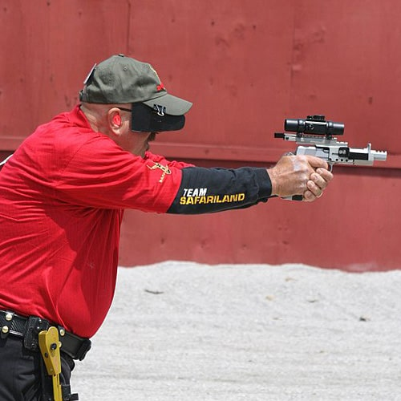

Seri Ateş

Tabancalarla hızlı ateş:
- Bianchi Kupası , IPSC ("koş ve silahla" unsuru olmadan) ve hedef gözetleme atışının (iki elle atış ve kuralların izin verdiği her durumda yüzüstü gitme hariç) bir birleşimidir; burada " Etkinlik(ler)", bu yarışmanın temelidir. Atıcılar, her bir ateş dizisinde ve mesafeler 10 ila 50 yarda aralığında kılıfta silahla başlamalıdır.
- Hızlı çekme , aynı zamanda hızlı çekme olarak da bilinir, Kuzey Amerika'dan, Amerikan Eski Batı'sındaki silahşorların geleneksel tek etkili revolverler kullanılarak romantikleştirilmiş sanatına dayanan bir tabanca eylemi biçimi. Ancak Kovboy aksiyon çekiminden farklı olarak Hızlı Çizim, özel boşluklar veya balmumu mermilerle yapılır.
Bazı yarışmalar kesinlikle zamana karşı yapılır ve en hızlı zaman kazanırken, çoğu kafa kafaya tek veya çift eleme maçları olarak kurulur.

Tüfeklerle hızlı ateş:
- CISM Rapid Fire maçı , ISSF 300 m Standart Tüfek etkinliğinin hızlandırılmış bir versiyonudur .
- Felthurtigskyting (kelimenin tam anlamıyla Field Rapid Shooting) ve Stangskyting , İskandinavya'da popüler olan bir tür değişken hızlı atışlı tüfek yarışmalarıdır .